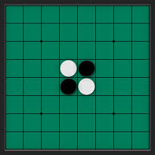
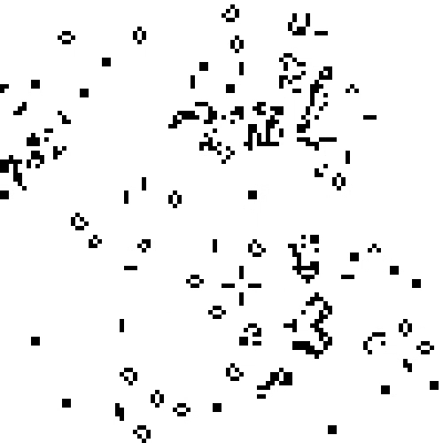

Tetris

Reversi

Game of Life
Ich habe eine Website mit drei Spielen erstellt.
python -m http.server 8080
kann man einen local host server erstellen.miniweb.exe -p 8000 -r .
In Tetris muss man die fallenden Blöcke in einer Reihe anordnen, dass sie ausgefüllt wird. Wenn eine Reihe gefüllt ist, leert sie sich und man bekommt Punkte. Zum bewegen der fallenden Blöcke nutzt man: WASD oder Pfeiltasten und zum Rotieren nutzt man: QE
Reversi hat ein 8x8 Felder Spielbrett. Es gibt zwei Farben
Game of Life ist eine Simulation oder ein Nullspieler spiel, welches auf einfachen Regeln basiert aber tortzdem komplexes verhalten entsteht. Die Welt ist in Zellen aufgeteilt. Eine Zelle kann entweder aktiv oder inaktiv sein. Eine Zelle wird in der nächsten Iteration aktiv wenn sie genau drei Nachbarn hat. Und sie bleibt am leben Wenn sie 2 oder 3 Nachbarn hat. Mehr auf Wikipedia